The Missing Link: прохождение миссии GTA 6
Опубликовано:
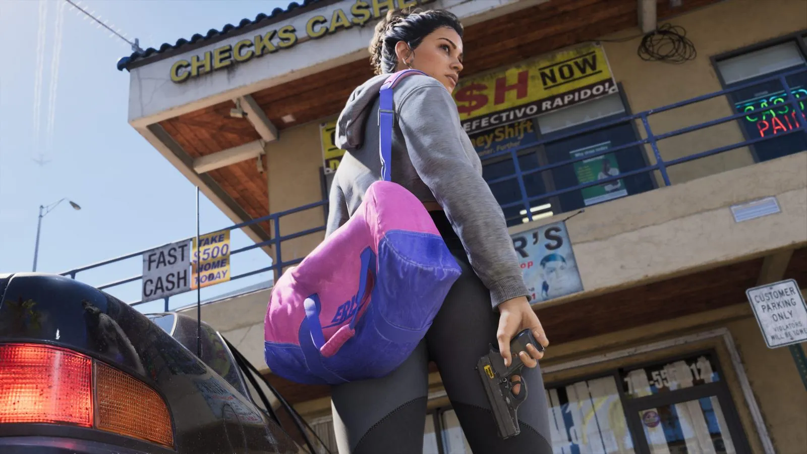
Коротко
- Андреа ведёт Лусию на петушиные бои за нужным человеком — Монти. Фотосессия, драка, погоня и в конце выбор, что с Монти делать.
- Глава 3, миссия 21 из 26. Играем за: Лусия.
- Награда: пистолет Монти образца 1992 года — если подобрать по ходу.
Миссия коротко
| Глава | 3. Tits Ass Drug Money |
| Номер в сюжете | 21 |
| Играем за | Лусия |
| Кто даёт | Андреа |
| Где начинается | Watson Bay, округ Мариана — Sloppy Molly’s |
| Условие | после Company Property |
| Награда | пистолет Монти образца 1992 года — если подобрать по ходу |
| Переиграть | нельзя — сохраняйтесь вручную |
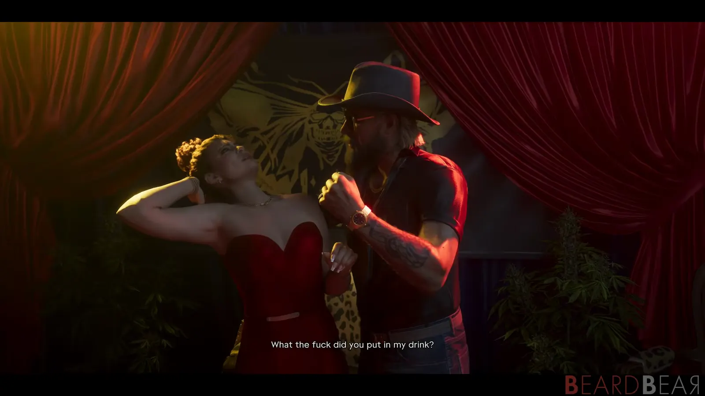
Где начинается
Прохождение по шагам
- Идите за Андреа в склад и отметьтесь у северной двери.
- Пройдите в заднюю комнату к Монти.
- Сделайте фото: левый стик — поза, R2 (RT) — снимок.
- Вырубите Монти в рукопашной.
- Победите первого врага и заберите пистолет в фотокомнате.
- Зачистите склад, садитесь в машину и уходите к Вайс-Сити.
- За Джейсона вытащите Монти из багажника и погрузчиком поднимайте и опускайте его.

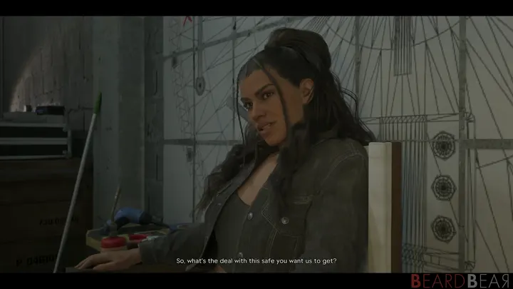

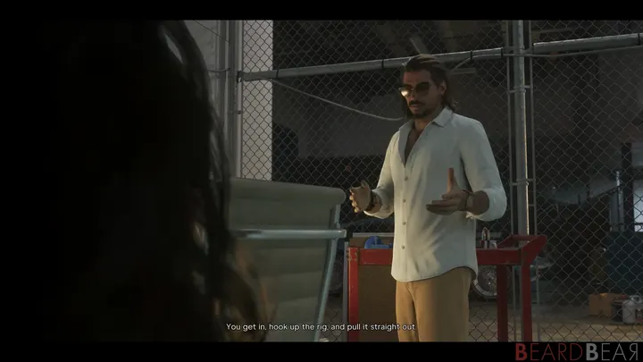

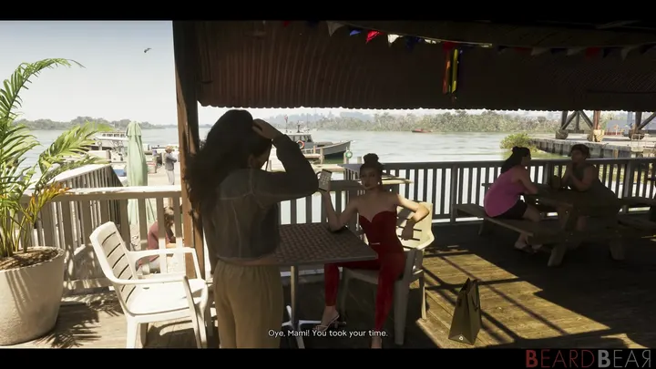

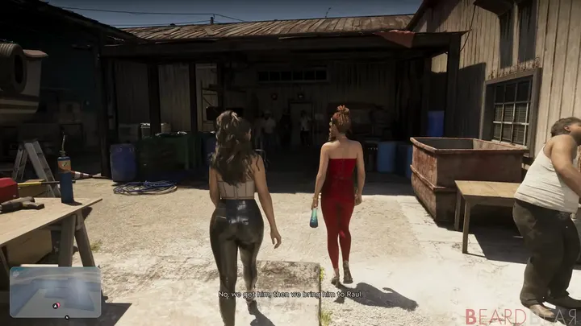

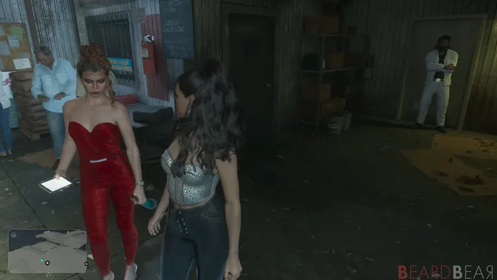

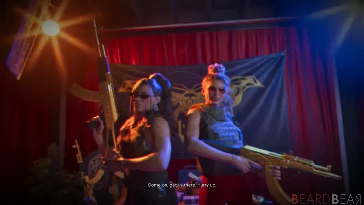

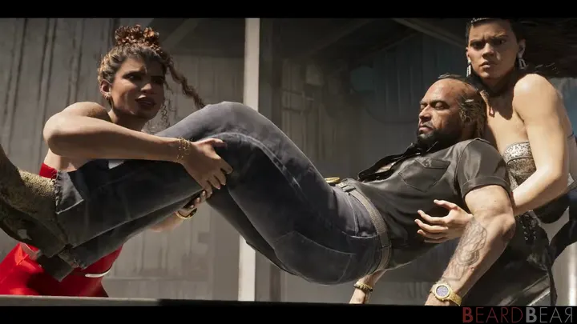

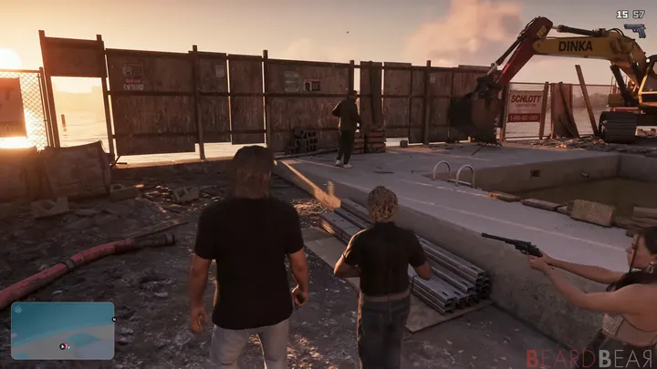

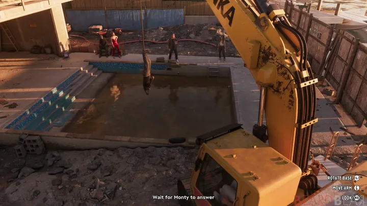
Советы
- Не опускайте Монти в воду до конца — он погибнет.
- Без случайных убийств — бонус Professional.
- Держите оружие наготове, пока идёте за Монти.
Что можно пропустить
Пистолет Монти образца 1992 года нужно подобрать до того, как пройдёте дальше первого врага, — потом его не будет.
Частые вопросы
Где пистолет Монти в The Missing Link?
В фотокомнате — заберите его сразу после первого врага.
Что выбрать с Монти?
Оставить на берегу или опустить в бассейн к аллигаторам — решение за вами.
Источники: PowerPyx, «GTA 6 The Missing Link (Meet Andrea) Walkthrough», 18–19.11.2026. Кнопки указаны для PS5, в скобках — Xbox. Названия миссий — как в английской версии игры.